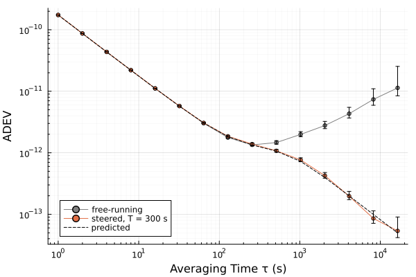

Steering
A steered clock is kept on its reference by small changes of its frequency, each computed from an estimate of how far off the clock is. Tight steering holds the phase close and carries the noise of the reference and of the readings into the clock; loose steering leaves the clock its own short-term stability and lets it wander. steering_gains sets the gains from the time constant that the loop should have and lqg_gains from a cost, steering_poles shows what any gains do, and steer replays a measured record through the loop, or predicts the steady state of the loop from a clock model.
using SigmaTau, Random
# the clock against its reference: white FM of 1e-11 at 1 s and random-walk
# FM, read with 0.1 ns of white PM
m = ClockModel(; tau0 = 1.0, R = 1e-20, q1 = 1e-22, q2 = 1e-26)
p, _ = simulate_clock(m, 65_536; rng = Xoshiro(1))
# a loop that settles in 300 s, with a steer each second
g = steering_gains(300.0, 1.0)SteeringGains(phase=1.107e-05 /s, frequency=0.006644, every 1 s)The loop
The state is the phase $p$ and the frequency $f$ of the clock against its reference, estimated by the Kalman filter. After each reading the frequency of the clock is changed by $u = -G\hat x$, with $G = (g_P, g_D)$ the gains, and the change stays in the clock, so over the interval $τ$ to the next steer the state moves as
\[x_{k+1} = Φ\,x_k + B\,u_k + w_k, \qquad Φ = \begin{pmatrix} 1 & τ \\ 0 & 1 \end{pmatrix}, \qquad B = \begin{pmatrix} τ \\ 1 \end{pmatrix},\]
and the filter, which knows the steer, predicts $\hat x^-_{k+1} = (Φ - BG)\,\hat x_k$ (Koppang and Leland (1999), Eqs. (1)–(3); Matsakis (2019), Eqs. (A.11)–(A.18)). $g_P$ is in 1/s: the frequency steer per second of phase error. $g_D$ is a pure number: the share of the frequency error that one steer removes.
The steer is a change of frequency that persists, the second of the three actuators that Farina et al. (2010), Eqs. (28)–(38) set side by side. Their Eqs. (42)–(45) turn such steers into those of another actuator, a phase microstepper for one. For a loop whose control sets the frequency offset itself, as the tuning voltage of an oscillator does, the frequency gain is $g_D - 1$ (Novick et al. (2023), §I).
Gains from a time constant
The eigenvalues of $Φ - BG$ are the poles of the loop, the roots of $z^2 + (τ g_P + g_D - 2)\,z + (1 - g_D)$ (Matsakis (2019), Eqs. (3.8)–(3.9)). A pole at $z$ decays as $e^{-t/T}$ with $|z| = e^{-τ/T}$. Pole placement chooses the poles and solves for the gains. With both poles at $r = e^{-τ/T}$ the loop is critically damped, the fastest response without ringing, and the gains are those of Eqs. (3.10)–(3.11) of that paper,
\[g_P = (1 - r)^2/τ, \qquad g_D = 1 - r^2 .\]
s = steering_poles(g)
s.stable, round.(s.time_constants)(true, [300.0, 300.0])Poles anywhere else come from the other method, and gains found any other way go straight into SteeringGains:
# a pair of poles, with a steer each minute
steering_gains([0.9 + 0.1im, 0.9 - 0.1im], 60.0)SteeringGains(phase=0.0003333 /s, frequency=0.18, every 60 s)A loop of two gains is stable for $g_P > 0$, $g_D > 0$ and $τ g_P + 2 g_D < 4$ (Matsakis (2019), Eq. (3.17) and the text after Eq. (3.18)).
Gains from a cost
Pole placement fixes how the loop answers a disturbance and leaves the variances to follow. The linear quadratic Gaussian (LQG) design (Koppang and Leland (1999), §III; Farina et al. (2010), §III-C-2) does the reverse: lqg_gains returns the gains that minimize the sum of
\[W_p\,p^2 + W_f\,f^2 + W_u\,u^2\]
over the steers, and the response is what it turns out to be.
gc = lqg_gains(1.0; phase = 1.0, steer = 1e10)SteeringGains(phase=9.978e-06 /s, frequency=0.004462, every 1 s)round.(steering_poles(gc).time_constants)2-element Vector{Float64}:
447.0
447.0Only the ratios $W_p τ^2/W_u$ and $W_f/W_u$ matter, and the gains do not depend on the noise of the clock or of the readings (Matsakis (2019), §1): the weights say what is tolerated, and steer on the clock model then gives the variances that result. A heavier steer weight is a slower loop. lqg_gains reproduces the three designs printed in Koppang and Leland (1999), §IV, each gain within 3 parts in $10^4$ of the printed figure.
The integral gain
A third gain $g_I$ acts on the running sum of the phase estimates, the current one included (Matsakis (2020), Eq. (3.1)). The poles are then the roots of
\[(z - 1)^3 + τ g_I\,z^2 + τ g_P\,z\,(z - 1) + g_D\,(z - 1)^2 = 0 ,\]
Eqs. (3.10) and (4.15) of that paper. At $g_I = 0$ this is $z - 1$ times the quadratic above. Three poles at $r$ give its Eqs. (3.15)–(3.17),
\[g_I = (1 - r)^3/τ, \qquad g_P = (1 - 3r^2 + 2r^3)/τ, \qquad g_D = 1 - r^3 ,\]
from steering_gains(T, τ; integral = true). The integral gain is there for what the model leaves out, a frequency drift above all, and it costs variance: with no such error the RMS of phase, frequency and steers is least at $g_I = 0$ (Matsakis (2020), §§II–III). It drives the mean of the estimated phase to zero. It does not correct what the filter itself gets wrong: under a drift that the clock model does not hold, the filter lags the clock and the steered phase keeps that lag.
Replaying a record
steer(data, model, g) takes the phase record of the free-running clock against the reference and returns the record as the loop would have left it.
r = steer(p, m, g)SteeringResult(65536 samples, SteeringGains(phase=1.107e-05 /s, frequency=0.006644, every 1 s))r.steered is the steered record, a PhaseData for any deviation, r.steers the frequency steer made at each sample, and r.correction the frequency correction in force.
The filter runs once over the record. Because it knows every steer exactly, its estimate of the steered clock is its estimate of the free-running clock plus the accumulated correction, so the loop itself is a short recursion on top of the filter, and trying other gains costs little. The filter runs at every sample. The steers can come less often, at g.interval, with the gains computed for that interval (Gödel et al. (2019), §3.1).
using Plots
ms = 2 .^ (0:14)
plot(adev(p, ms); label = "free-running", color = :gray)
plot!(adev(r.steered, ms); label = "steered, T = 300 s")
plot!(ms, steer(m, g; tau = ms, readings = true).adev; label = "predicted",
linestyle = :dash, color = :black, legend = :bottomleft)
The Allan deviation of the steered record follows the clock at averaging times well below $T$ and falls as $1/τ$ well above it, where the clock is held to the reference.
sigmatau steer runs the replay from the command line, with the model fitted to the first stretch of the record alone and the results taken from the end of that stretch on.
Predicted steady state
On a ClockModel in place of a record, steer returns the steady state: the RMS of the time error, of the frequency error and of the steers, and the Allan deviation of the steered clock against its reference.
steer(m, g)SteeringPrediction(phase 4.597e-10 s, frequency 1.395e-12, steers 7.408e-15 rms; SteeringGains(phase=1.107e-05 /s, frequency=0.006644, every 1 s))It answers what a time constant costs before any record is replayed:
T = [30, 300, 3000]
q = [steer(m, steering_gains(t, 1.0)) for t in T]
# T (s), the RMS time error (s) and the RMS steer
[T [x.phase for x in q] [x.steers for x in q]]3×3 Matrix{Float64}:
30.0 8.09196e-11 5.22408e-14
300.0 4.59664e-10 7.40846e-15
3000.0 8.81829e-9 2.07098e-15Steering is deterministic, so the Kalman gain $K$ and the covariance $P$ of the estimate are those of the free-running clock. The estimate then obeys $\hat x_{k+1} = (Φ - BG)\,\hat x_k + K ν_{k+1}$ with white innovations $ν$, its covariance solves a Lyapunov equation, and the covariance of the clock itself is that plus $P$ (Matsakis (2019), §2 and Appendix B; Matsakis (2020), §II). The Allan deviation comes from the covariance of the phase at two lags. In simulation, on 40 records of 100 000 samples of the clock above steered at $T$ = 30 s with two gains and with three, the RMS of phase, frequency and steers and the Allan deviation at 1, 16 and 256 s were within 0.4 % of the prediction in the mean and within 6 % in every record.
The prediction is for the clock itself, without the noise of the readings, and for a steer at every sample. For a longer interval, replay a record from simulate_clock.
A replayed record is of readings, $z_k = h^\mathsf{T} x_k + v_k$, and readings = true gives phase and adev for those, to set beside it:
τ = [1, 16, 256, 4096]
predicted = steer(m, g; tau = τ, readings = true).adev
[τ predicted adev(r.steered, τ; ci = false).dev] # τ (s), predicted, replayed4×3 Matrix{Float64}:
1.0 1.73494e-10 1.73955e-10
16.0 1.11168e-11 1.11316e-11
256.0 1.3394e-12 1.38485e-12
4096.0 1.9892e-13 1.97219e-13The noise $v$ of a reading, of variance $R$, is not in the clock at that instant, so the variance of the reading is that of $h^\mathsf{T} x$ plus $R$. It is in the clock afterwards, through the steers: $j$ steps on, the joint state of estimate and error has the covariance $M^j b_v R$ with it, where $M$ is the transition of that state and $b_v$ what one reading adds to it. With $C_j$ the covariance of $h^\mathsf{T} x$ at lag $j$, $c$ the row that picks $h^\mathsf{T} x$ out of the joint state, and $ρ_j = c^\mathsf{T} M^j b_v R$,
\[σ_y^2(jτ) = \frac{3C_0 - 4C_j + C_{2j} + 3R - 4ρ_j + ρ_{2j}}{(jτ)^2} .\]
On 40 simulated records each of five clocks and loops (white PM with white and random-walk FM under two gains, three gains and gains from a cost, white PM far above the clock, and flicker PM and FM states), the median Allan deviation of the steered record at 1 to 256 samples stayed within 1 % of this. Without the terms of the readings the prediction at one sample was low by a factor of 3 to 17.
Flicker and drift states
The published loops act on a phase and a frequency state. Two extensions here are this package's own.
With flicker FM states in the model, the frequency gain acts on the whole frequency estimate, the frequency state plus the Markov states. In simulation, on a clock with white FM of $10^{-11}$ at 1 s, a flicker floor of $3 × 10^{-13}$ and 0.1 ns of white PM, steered every second (five records of 300 000 samples), the phase RMS was 1.10, 1.65 and 2.39 times smaller at $T$ = 30, 300 and 3000 s than with the gain on the frequency state alone, for steers 1.08, 1.6 and 2.7 times larger.
A drift state $d$ is steered out ahead of the feedback: the steer carries $-τ\hat d$, and the frequency that the gain acts on is $\hat f - τ\hat d/2$. Phase and that frequency then obey the two-state loop above exactly, so a steady drift leaves no standing phase offset, with or without an integral gain.
SigmaTau.SteeringGains — Type
SteeringGains(phase, frequency, integral, interval)Gains of a steering loop. Every interval seconds the frequency of the clock is changed by
\[u = -\left(g_P\,\hat p + g_D\,\hat y + g_I \sum \hat p\right),\]
with $\hat p$ and $\hat y$ the Kalman estimates of its phase and frequency against the reference and $\sum \hat p$ the sum of the phase estimates at the steers so far, this one included. The change stays in the clock until the next steer adds to it. $g_P$ and $g_D$ are the gains $g_1$ and $g_2$ of Matsakis (2019), Eqs. (A.17)–(A.18); the integral gain $g_I$ is that of Matsakis (2020), Eq. (3.1). Build the gains with steering_gains or lqg_gains.
Fields
phase::Float64: Phase gain (1/s): the frequency steer per second of phase error.frequency::Float64: Frequency gain: the share of the frequency error one steer takes out.integral::Float64: Integral gain (1/s), on the running sum of the phase error;0for a loop of two gains.interval::Float64: Seconds between steers.
SigmaTau.steering_gains — Function
steering_gains(T, interval; integral=false) → SteeringGains
steering_gains(poles::AbstractVector, interval) → SteeringGainsGains of a steering loop by pole placement.
With a time constant T the loop is critically damped: its poles sit together at $r = e^{-τ/T}$, with τ the interval between steers, and a disturbance dies away as $e^{-t/T}$ without ringing. The gains are those of Matsakis (2019), Eqs. (3.10)–(3.11),
\[g_P = (1 - r)^2/τ, \qquad g_D = 1 - r^2 ,\]
and with integral = true, all three poles at $r$, those of Matsakis (2020), Eqs. (3.15)–(3.17),
\[g_I = (1 - r)^3/τ, \qquad g_P = (1 - 3r^2 + 2r^3)/τ, \qquad g_D = 1 - r^3 .\]
poles places them anywhere instead: two poles for phase and frequency gains, three with an integral gain. With $w_i = 1 - z_i$ for each pole $z_i$, the gains are $τ g_P = w_1 w_2$ and $g_D = w_1 + w_2 - w_1 w_2$ for two poles, and for three
\[τ g_I = w_1 w_2 w_3, \qquad τ g_P = e_2 - 2 w_1 w_2 w_3, \qquad g_D = e_1 - e_2 + w_1 w_2 w_3 ,\]
with $e_1 = \sum w_i$ and $e_2 = \sum_{i<j} w_i w_j$. These follow from the characteristic polynomial given under steering_poles.
Arguments
T: time constant of the loop in seconds.interval: seconds between steers.poles: two or three poles in the z-plane; complex poles in conjugate pairs.
Keywords
integral: whether the loop has an integral gain.
Examples
julia> using SigmaTau
julia> g = steering_gains(3600.0, 60.0) # settle in an hour, steer each minute
SteeringGains(phase=4.553e-06 /s, frequency=0.03278, every 60 s)
julia> round.(steering_poles(g).time_constants)
2-element Vector{Float64}:
3600.0
3600.0SigmaTau.lqg_gains — Function
lqg_gains(interval; phase, frequency=0, steer) → SteeringGainsGains of the steering loop that minimizes a quadratic cost: the linear quadratic Gaussian (LQG) design of Koppang and Leland (1999), §III.
The cost is the sum over the steers of
\[W_p\,p^2 + W_f\,f^2 + W_u\,u^2 ,\]
with $p$ and $f$ the phase and frequency of the clock against its reference and $u$ the steer. The gains are $G = (B^T K B + W_u)^{-1} B^T K Φ$, with $K$ the solution of the Riccati equation
\[K = Φ^T K Φ + W_Q - Φ^T K B\,(B^T K B + W_u)^{-1} B^T K Φ, \qquad W_Q = \begin{pmatrix} W_p & 0 \\ 0 & W_f \end{pmatrix},\]
and $Φ$ and $B$ those of the loop at the interval τ between steers. They do not depend on the noise of the clock or of the readings, and only the ratios $W_p τ^2/W_u$ and $W_f/W_u$ matter (Matsakis (2019), §1). A small steer weight gives $g_P = 1/τ$ and $g_D = 1$, which takes out the whole estimated error in one steer; a large one gives a slow loop. The design has no integral gain: the cost is least without one (Matsakis (2020), §III).
Arguments
interval: seconds between steers.
Keywords
phase: weight $W_p$ on the square of the phase (s), positive.frequency: weight $W_f$ on the square of the frequency.steer: weight $W_u$ on the square of the steer, positive.
Examples
The first design of Koppang and Leland (1999), §IV, for a steer each hour, which prints the gains as 6.503e-5 and 0.5771:
julia> using SigmaTau
julia> lqg_gains(3600.0; phase = 1e-3, frequency = 1e-3, steer = 1e5)
SteeringGains(phase=6.503e-05 /s, frequency=0.5771, every 3600 s)SigmaTau.steering_poles — Function
steering_poles(g::SteeringGains) → NamedTupleWhere the gains g put the poles of the closed loop, and what follows from them. The poles are the roots of
\[(z - 1)^3 + τ g_I\,z^2 + τ g_P\,z (z - 1) + g_D\,(z - 1)^2 = 0 ,\]
with τ the interval between steers (Matsakis (2020), Eqs. (3.10) and (4.15)). Without an integral gain a factor $z - 1$ drops out and leaves the quadratic of Matsakis (2019), Eqs. (3.8)–(3.9).
Returns
A named tuple with
poles: the roots, complex;time_constants: for each pole the $T$ (s) of its decay $e^{-t/T}$, from $|z| = e^{-τ/T}$, negative for a pole that grows;frequencies: the frequency (Hz) each pole rings at, zero on the positive real axis and $1/2τ$ on the negative;stable: whether every pole is inside the unit circle.
For two gains the loop is stable when $g_P > 0$, $g_D > 0$ and $τ g_P + 2 g_D < 4$ (Matsakis (2019), Eq. (3.17) and the text after Eq. (3.18)).
A pole placed twice or three times is found to about the square or cube root of machine precision, as a fraction of its distance from 1.
Examples
julia> using SigmaTau
julia> p = steering_poles(SteeringGains(0.02, 0.3, 0, 2.0));
julia> p.stable, round.(p.time_constants; digits = 3)
(true, [11.215, 11.215])SigmaTau.steer — Function
steer(data::PhaseData, model::ClockModel, g::SteeringGains) → SteeringResultReplay a record through a steering loop: what the clock would have done had it been steered to its reference with the gains g.
data is the phase of the free-running clock against the reference. The Kalman filter for model follows the clock (kalman_filter), and every g.interval the frequency of the clock is changed by the $u$ of SteeringGains, computed from the estimates just after the reading and applied at once, as in Koppang and Leland (1999), Eqs. (1)–(3) and Matsakis (2019), Eqs. (A.11)–(A.17). The steered record is each reading plus the phase the steers have added by then, so any deviation of it shows the stability of the steered clock.
The filter runs at every sample and the steers come every g.interval, a whole multiple of the sample interval, with gains computed for that interval (Gödel et al. (2019), §3.1). The filter knows each steer exactly, so its estimate of the steered clock is its estimate of the free-running one plus the correction, and one pass of the filter serves any gains.
The published loops act on a phase and a frequency state. Here the frequency $\hat y$ is the whole frequency estimate of the model: the frequency state plus the Markov states of a model with flicker FM. A drift state $\hat d$ is steered out ahead of the feedback, $u = … - τ \hat d$ with $\hat y$ taken as $\hat f - τ \hat d/2$, which leaves phase and $\hat y$ obeying the two-state loop, so a steady drift leaves no standing phase offset. Both extensions are this package's.
Without a drift state the filter lags a drifting clock, and the steered phase stands off from the reference. An integral gain brings the mean of the estimated phase to zero, not that lag.
Arguments
data: phase of the free-running clock against its reference;NaNsamples are gaps, which the filter predicts across.model: clock model of the pair, withmodel.tau0the sample interval.g: gains, withg.intervala whole multiple ofmodel.tau0.
Examples
using SigmaTau, Random
m = ClockModel(; tau0 = 1.0, R = 1e-20, q1 = 1e-22, q2 = 1e-26)
p, _ = simulate_clock(m, 65536; rng = Xoshiro(1))
r = steer(p, m, steering_gains(300.0, 1.0))
adev(r.steered) # the steered clock against its referencesteer(model::ClockModel, g::SteeringGains; tau,
readings=false) → SteeringPredictionThe steady state a steering loop settles to on a clock with the noise of model: the RMS of the steered clock's time and frequency error and of the steers, and its Allan deviation against the reference.
Steering does not change what the filter knows, so its gain $K$ and its covariances are those of the free-running clock, and its estimate obeys $\hat x_{k+1} = (Φ - B G)\,\hat x_k + K ν_{k+1}$ with white innovations $ν$. The variances then follow from Lyapunov equations, as in Matsakis (2019), §2 and Appendix B and, with an integral gain, Matsakis (2020), §II. The figures are for the clock itself, without the noise of the readings that a measured record carries; readings = true gives the time error and the Allan deviation of the readings, to set beside a replayed record.
The loop steers at every sample here, g.interval == model.tau0; for a longer interval replay a simulated record. A drift state is taken as steered out. Random-run FM (q3 > 0) has no steady state.
Arguments
model: clock model of the pair of clock and reference.g: gains of a stable loop.
Keywords
tau: averaging times (s) of the Allan deviation, whole multiples ofmodel.tau0; by default the octaves up to 32 times the longest time constant of the loop.readings:phaseandadevare those of the readings of the steered clock, with their noise (white PM, and flicker PM where the model holds it), as in thesteeredrecord ofsteer(data, model, g).
Examples
using SigmaTau
m = ClockModel(; tau0 = 1.0, R = 1e-20, q1 = 1e-22, q2 = 1e-26)
s = steer(m, steering_gains(300.0, 1.0))
s.phase # RMS time error against the reference, s
s.adev # at s.tauSigmaTau.SteeringResult — Type
SteeringResultOutput of steer on a record: the record as the loop would have left it, and what the loop did.
Fields
gains::SteeringGains: Gains of the loop.steered::PhaseData{Float64}: The steered record: each reading plus the phase the steers had added by then.steers::Vector{Float64}: Frequency steer made at each sample; zero between steers.correction::Vector{Float64}: Sum of the steers so far: the frequency correction in force at each sample.phase::Vector{Float64}: The filter's estimate of the steered clock's phase (s) at each sample.frequency::Vector{Float64}: The filter's estimate of the steered clock's frequency at each sample.
SigmaTau.SteeringPrediction — Type
SteeringPredictionOutput of steer on a clock model: the steady state of the loop.
Fields
gains::SteeringGains: Gains of the loop.phase::Float64: RMS time error (s) of the steered clock against its reference.frequency::Float64: RMS frequency error of the steered clock; its white FM, which has no value at an instant, is left out.steers::Float64: RMS frequency steer.tau::Vector{Float64}: Averaging times (s).adev::Vector{Float64}: Allan deviation of the steered clock against its reference attau.